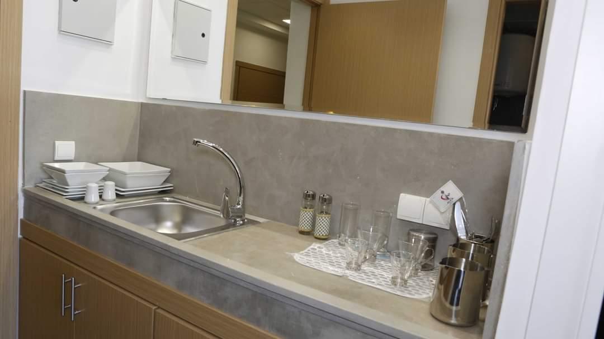
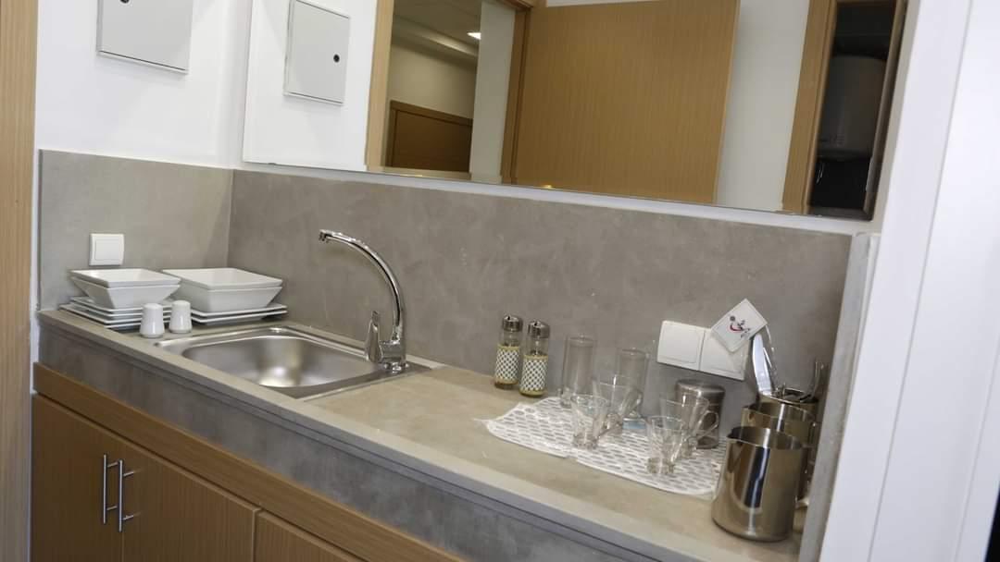

Filieres :
L’EIA a pour objectif de former des experts marocains et africains de l’ingénierie informatique
La formation à l’EIA est orientée vers la professionnalisation rapide et agile de l’étudiant en assurant :
• Le dynamisme des enseignements proposés avec 50% de cours et 50% de suivi de projets ;
• L’intégration de modules majeurs et mineurs visant à former un ingénieur d’Etat accompli étant à même de comprendre les contraintes de son environnement ;
• Des outils pédagogiques à la pointe de la technologie (FabLab, imprimantes 3D, plateforme de virtualisation sous VMWare vSphere 6.7, laboratoires de recherche…) ;
• Des enseignants et des intervenants professionnels qualifiés
Les diplômés de la formation ont accès à divers débouchés professionnels, tels que:
- Ingénieur R&D
- Chef de projet informatique
- Ingénieur développeur
- Administrateur de bases de données
- Ingénieur conseil.
-
- Algorithmique et Programmation Orientée Objet
- Algorithmique liée à JAVA
- JAVA objet oriente (tous se qui liée a JAVA)
- Base de Données et modélisation informatique appliquée aux sciences de la santé
- Infrastructure Système et Réseaux
- Bio Analyse I : notions de probabilités et de statistiques
- Bio Analyse II : Tests statistiques et Analyses multivariées
- Méthodes numériques appliquées aux sciences de la santé
- Introduction au développement durable
- Techniques de communication orale
- Management Hospitalier
-
- Génie Logiciel appliqué aux sciences de la santé
- Bases de Données 2
- Programmation WEB – Health softwares
- Bio analyse et statistiques avancées
- Business Intelligence & Data Mining
- Théorie de jeux, (oriente IA & Data)
- Ressources et énergie
- Langues & Communication 2
- Le risque sociétal dans le métier de l’ingénieur
- Economie et comptabilité appliquée aux sciences de la santé
- Management Hospitalier – Marketing Médical et Pharmaceutique
- Projet de Synthèse I
- Chaque année un nouveau problématique (Smart city, gestion intelligent de l’hôpital…), application de tous les outils et les langages de programmations ce qui étudiée dans S1 et S2
-
- Architecture et Urbanisation des SI
- Conduite de projet
- Projet site e-commerce, dépend de choix de vous prof (Angular, Spring Boot ).
- Analyse de cycle de vie
- Introduction à la recherche
- Recherche opérationnelle appliquée aux sciences de la santé I
- Calculabilité et complexité
- Réseaux et Virtualisation I
- (orienté vers network & cloud)
- Bases de Données Avancées
- mongo DB & Haven
- Architectures applicatives
- Langues et Communication 3
- Conduite du Changement en milieu Hospitalier I
- Economie appliquée aux sciences de la santé
-
- Administration de bases de données appliquées aux sciences de la santé
- Réseaux et Virtualisation II
- network & Cloude
- Files d’attente et simulations
- Recherche opérationnelle appliquée aux sciences de la santé II
- Preuve de programmes
- Informatique décisionnelle
- Logique avancée
- Responsabilités de l’ingénieur et développement durable
- Langues & Communication 4
- Innovation et entrepreneuriat
- Conduite du Changement en milieu Hospitalier II
- Projet de Synthèse II- Informatique en milieu hospitalier
-
- BPM
- Conduite de projets
- Sécurité des systèmes d’information hospitaliers
- Calcul formel
- Big Data
- Infrastructures numériques et énergie
- Algorithmique distribuée
- Langues et Communication 5
- Responsabilité sociale des entreprises et développement durable – Management de la RSE
- Modélisation des procédures de workflow
- Business Intelligence
- IoT
- Apprentissage automatique
- Spécialisation Data Engineering – 5
- Organisation du système national de santé
- Ingénierie des Sos
- Spécialisation SI Santé – 5
- Spécialisation Mobilité & Cloud Computing – 5
- Gestion de flotte
- Conduite opérationnelle d’un projet SI
- Projet personnel
- Qualité des Processus
- ERP hospitalier
-
- PROJET DE FIN D'ETUDE (PFE)
Les diplômés de la formation ont accès à divers débouchés professionnels, tels que:
- Les diplômés de la formation ont accès à divers débouchés professionnels, tels que:
- Formation très bonne, surtout si tu veux continuer dans le développement.
- Diplôme reconnu par l'État.
- Bien qu'elle semble être une école de génie informatique en général, elle couvre de nombreux domaines (data, IA, développement, etc.) comme si elle se spécialisait dans chacun d'eux.
- Les classes comptent au maximum 20 étudiants, et 6 à 14 obtiennent un double diplôme.
- La bourse t'est retirée parce que l'école est affiliée à une université privée.
- La bourse t'est retirée parce que l'école est affiliée à une université privée.
- Hébergement coûte environ 2 millions de dirhams par an.
- Réseau payant, tu dois acheter une carte et la recharger, et les repas coûtent au moins 35 dirhams sans être rassasiants.
- Affiliée à Zahraoui et considérée comme privée même si elle est publique, juste parce que Zahraoui est privé, tu ne peux donc pas demander une résidence universitaire car elle est considérée comme privée.
- La pire administration du monde.
- Emploi du temps surchargé.
- Pas du tout d'activités parascolaires.
- Les études sont très strictes.
- Les absences sont autorisées mais tu ne peux pas en abuser et tu ne dois pas dépasser 40 heures par semestre.
- Pour ceux qui viennent après les classes préparatoires et veulent rigoler et s'amuser, cette école n'est pas faite pour cela.
- Cette école n'a que trois promotions, donc pas toutes les entreprises la connaissent comme l'INPT ou l'ENSIAS...
DD & Echange :
|
Départements et Spécialités
Disponibles : |
Processus d'échange/double diplomation |
||
|---|---|---|---|
| Row 3 |
EPISEN
(école public en France) |
Genie Informatique | Entretien avec des jurés de EPISEN avec des test ça dépend de jurés
le nombre des etudiants n’est pas fixé Après la deuxième année, vous irez en France pour terminer vos études. Les frais de scolarité sont gratuits, mais vous devez prendre en charge les frais de logement et de repas. En troisième année, vous avez le droit de choisir l'une des spécialités suivantes : science des données, cybersécurité, développement, etc. |
Comités&Clubs :
Compus:
Frais de l’internat 20 000dh par année ainsi que resto 25dh pour un repas Pas le droit postuler a cité universitaire car Elle est sous la tutelle du l’Université Internationale Abulcasis des Sciences de la Santé(UIASS) privé.


 

Comments